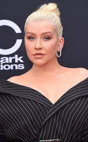

Pop music is carried by two of the greatest pop singers of the past and the present: Christina Aguilera and Ariana Grande.
Christina Aguilera was made popular in the late 90s and early 2000s by her powerful and gritty voice. She shocked everyone with her strong vocals at the age of sixteen. Aguilera competed with Britney Spears for attention in the music industry, and although Britney was an amazing performer, Christina was (and still is) the better singer. I started listening to Christina Aguilera because my mom would buy all her CDs. Some of my favorite songs from Christina are "Walk Away" from Stripped and "La Reina" from her latest album Aguilera.
Ariana Grande first became popular after starring in Nickelodeon shows like Victorious and Sam & Cat. Her vocals were a highlight of Victorious, and she continued to grow as an artist when she came out with her own music. "The Way" was one of her biggest hits, launching her fame as a vocalist. She is one of the most technical singers and has become one of the biggest pop singers in music today. She has carried out several business endeavors including fragrance, makeup, and body care lines. I know almost all of her songs, but a couple of my favorites are "Almost Is Never Enough" from her album Yours Truly and "west side" from her most recent album positions.
